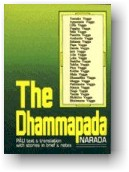

|
BuddhaSasana Home Page |
Vietnamese, with Unicode Times font |
|  |
THI KỆ PHÁP CÚ KINH (DHAMMAPADA)Pali - Anh - Việt TỊNH
MINH dịch và chú giải từ vựng Anh-Việt Bản
dịch Anh ngữ: Hòa thượng NARADA,
|
|
MỤC LỤC Lời
người dịch (Tịnh Minh) -ooOoo- Kinh Pháp Cú được coi là Kinh Lời Vàng. Ðức Phật đã thuyết giảng giáo pháp của Ngài suốt 45 năm, trong đó có những bài kệ ngắn gọn, hàm súc, linh hoạt, thú vị, thực tế với từng trường hợp và rất ích lợi cho những ai tự nguyện tu tâm dưỡng tánh hoặc lên đường hành đạo giải thoát. Kinh Pháp Cú đã được phiên dịch ra nhiều thứ tiếng và được phổ biến trên khắp thế giới. Riêng ở nước ta, một số dịch bản đã được ấn hành và cũng đang được phổ cập sâu rộng, đặc biệt là trong giới thiền môn. Bản dịch Thi Hóa Pháp Cú Kinh đây không ngoài mục đích là góp nhặt thi tứ, sắp xếp ngôn từ, chuyên chở ý nghĩa từ dịch bản tiếng Anh mà đại đức Narada đã dày công phiên dịch, chú giải từ nguyên bản Pali để sao cho có chút âm hưởng thi ca, nghĩa là có vần, có điệu, ngõ hầu giúp người đọc dễ đọc, dễ học, dễ thuộc, dễ nhớ, dễ áp dụng lời Phật dạy vào nếp sinh hoạt hằng ngày của mình qua mọi thời đại, cũng như tục ngữ ca dao, nhờ nhạc điệu và tính chất trữ tình đặc thù của nó mà lòng người dễ dàng cảm nhận, suy gẫm, hành xử qua bao thế hệ. Bản dịch Thi Hóa Pháp Cú Kinh gồm 26 phẩm, 423 bài kệ với những truyện tích và chú giải toàn bộ. Ðây là phần thi hóa trích ngang, và vì thi hóa nên người dịch xin mạo muội thêm bớt một vài từ, chuyển hoán một vài câu, dĩ nhiên là cùng trong bài kệ, để sao cho nhạc điêu, lời thơ và ý kinh được nhất quán theo nghĩa lý và văn mạch tiếng Việt, và cũng vì từ tản văn đến thi hóa nên khó mà tránh khỏi đôi chỗ chưa chỉnh; mong các bậc cao minh, độc giả hỷ xả và chỉ giáo cho. Ước gì phần thi hóa này được phổ biến đến các thiền môn và đến tay các chú các cô sa di như bộ luật "Tỳ Ni Nhựt Dụng Thiết Yếu" vậy. Sau cùng, xin cảm ơn Thượng tọa Thích Phước Sơn và Thầy Nguyên Hồng, những vị đã trực tiếp khuyến khích và giúp đỡ tôi hoàn tất bản dịch này. Ðầu xuân
năm Ðinh Mão 1987 -ooOoo- Bản dịch này đã được phép lưu hành nội bộ tại Trường Cơ Bản Phật Học thành phố Hồ Chí Minh năm 1990 với tựa đề Thi Hóa Pháp Cú Kinh và cũng đã được một số văn nghệ si nổi tiếng ở Sài Gòn ngâm vào băng cassette. Ðể tránh sự hiểu nhầm từ "Thi Hóa" và để đảm bảo tính nghiêm túc của bản dịch, tựa đề Thi Hóa Pháp Cú Kinh nay được đổi là THI KỆ PHÁP CÚ KINH. Và cũng để đáp ứng nhu cầu nghiên cứu Phật Pháp qua tiếng Anh ngày càng gia tăng, đặc biệt là giúp tăng ni sinh tại các Trường Cơ Bản và Cao Cấp Phật Học có tài liệu tham khảo và tự học, nay dịch giả da công hiệu đính lại bản Việt ngữ, thêm phần Anh ngữ và chú giải từ vựng từng kệ để việc tra cứu hay tham khảo được dễ dàng hơn. Những từ Anh ngữ chú thích trong bản tiếng Anh này được trích từ bản Buddhist Legends của tác giả Eugene Watson Burlingame do hội Pali Text tái bản năm 1990 tại Anh quốc. Phật Pháp nhiệm mầu, ngôn từ đa dạng; văn chương thi phú khó mà được như ý tất cả. Vậy nếu ai đó nhặt được đôi câu tâm đắc trong bản dịch này âu cũng là túc duyên nhiều đời nhiều kiếp của quý vị đối với Phật Pháp vậy. Mùa xuân
năm Ất Hợi 1995 -ooOoo- Kinh Pháp Cú là một bộ sưu tập Ðá Quý và hẳn là kim chỉ nam cho mỗi phật tử. Nội dung bản kinh nên được đọc đi, đọc lại, nghiên cứu, quán triệt và, trên hết, là phải áp dụng hằng ngày. Những câu danh ngôn vàng ngọc được thể hiện trong bản Kinh này đã minh chứng hùng hồn những lời dạy đạo đức và triết học của Ðức Phật. Ðộc giả sẽ nhận thấy sự so sánh giản dị được Ðức Phật ứng dụng trong Kinh Pháp Cú mà ngay cả một em nhỏ cũng có thể hiểu được. Ví dụ như so sánh bánh xe bò, bóng người, căn nhà lợp vụng, ngôi làng đang ngủ, hồ nước sâu thẳm v.v... Sự vĩ đại của Ðức Phật là ở chỗ Ngài trình bày những sự thật uyên thâm bằng những ngôn từ giản dị. Trong Kinh Pháp Cú có nhiều trường hợp cho thấy Ðức Phật không những thuyết giảng cho giới trí thức và hàng trưởng lão, mà còn giáo dục trẻ em bằng ngôn ngữ của riêng chúng. Trong đợt in lần thứ hai này, do Hội Ðại Bồ Ðề (Maha Bodhi Society) xuất bản, bản dịch đã được sửa đổi ở nhiều chỗ. Bản văn Pali đây đã được in theo kiểu chữ Rômanh để độc giả có thể thuộc được những câu Kệ (Gàthàs) trong lúc nhàn rỗi và thán phục vẻ đẹp, vẻ phong phú của ngôn từ nguyên thủy. Trong khi chuẩn bị bản dịch này, tôi đã tham khảo tất cả những bản dịch có giá trị, và tôi phải thừa nhận rằng chúng vô cùng ích lợi cho tôi. NÀRADA
MAHATHERA -ooOoo- Ðầu
trang | Mục
lục | 01 | 02
| 03 | 04 | 05
| 06 | 07 | 08
| 09 | 10 | |
Chân thành cám ơn Đại đức Giác Đồng đã gửi tặng phiên bản điện tử (Bình Anson, tháng 07-2001).
updated: 01-08-2001